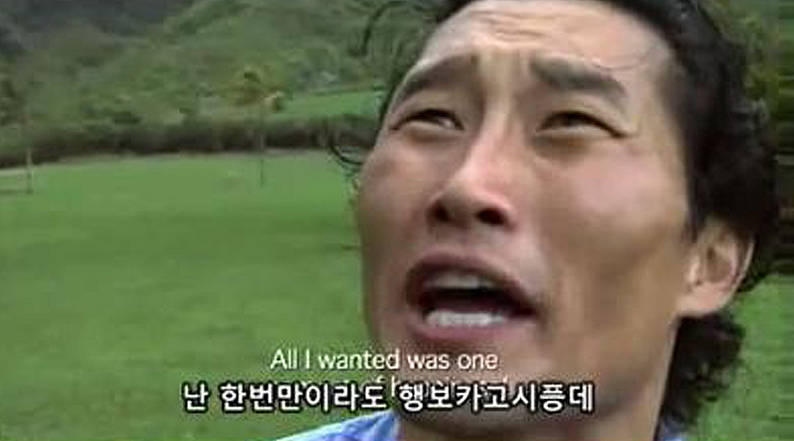
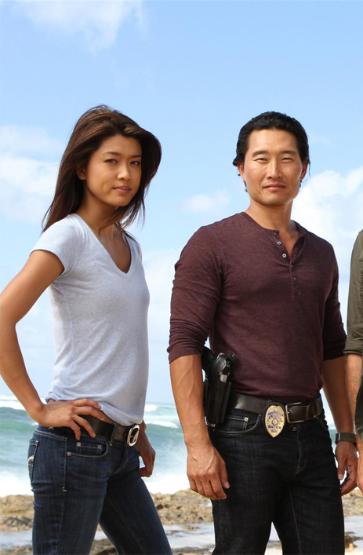
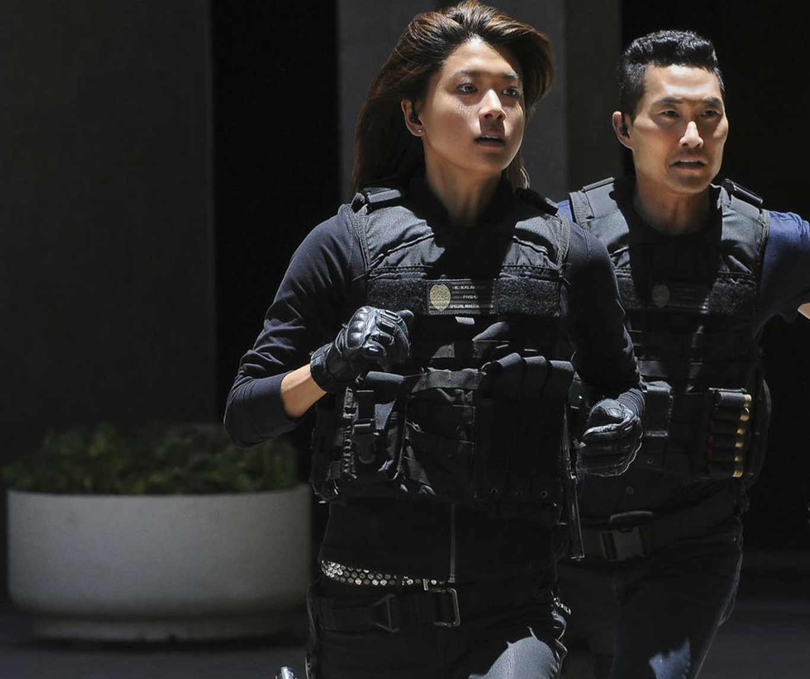

헐리우드 내 인종차별은 꽤나 오래된 이슈지만 그에 대한 비난은 2016년 아카데미 시상식 이후 폭발했다. ‘백인 만의 잔치’로 불린 아카데미는 소셜 미디어에서 ‘오스카는 너무 하얗다’ (#oscarssowhite)라는 해시태그를 통해 인종차별에 대해 비판의 목소리가 높아졌다.
하지만 이것은 오로지 흑인 및 라틴계 인종 차별에 대한 비난이었는지 이 비난에 동참했던 오스카 시상식 호스트 크리스 락도 아시아계 미국인 조크를 통해 헐리웃 내 아시아인 인종차별이 얼마나 가벼운 문제로 인식되는 지를 보여주었다.
#헐리우드
#인종차별

우리나라에서 드라마 LOST의 꽈찌쭈로 유명한 배우 대니얼 대 킴과 배우 그레이스 박 두 사람은 CBS 드라마 ‘하와이 파이브 오’ 시리즈에 주연으로 출연해왔으나 함께 출연한 백인 주연 배우들과의 임금 차별로 인해 하차를 결정한 것으로 알려졌다.
두 사람은 드라마의 제작사 측에 다른
두 백인 주연 배우인 알렉스 오로린과 스콧 칸과 동등한 출연료를 요구했으나 CBS측이 받아들이지 않았다. 대신 제작사 측은 두 사람에게 두 백인 배우보다 10~15% 더 낮은 금액을 제시했고, 두 사람은 제시된 임금을 받아들이는 대신 하차를 결정한 것.


